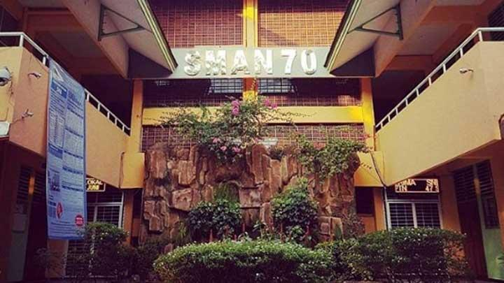

SMAN 70 Jakarta adala sekolah menengah atas yang berakreditasi A dan terletak di Jl. Bulungan Blk. C No.1, RT.11/RW.7, Kramat Pela, Kec. Kby. Baru, Kota Jakarta Selatan, Daerah Khusus Ibukota Jakarta 12130. SMA 70 setiap angkatannya memiliki 10 kelas (terkadang 8 Kelas IPA dan 2 IPS atau 7 Kelas IPA dan 3 IPS).